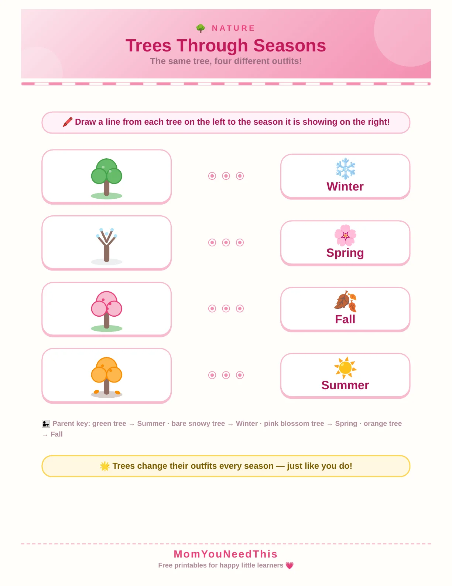

🌳🌲 Trees Activities Tall, Strong & Full Of Life
Quick Answer
This free printable trees activity helps toddlers and preschoolers (ages 2–5) learn a tree's parts — roots, trunk, branches and leaves — and follow a tree through the four seasons: spring buds, summer shade, autumn color, winter rest. Kids match leaves to trees, learn tree parts, and discover what trees give us: shade, fruit, oxygen and homes for animals. Download and print at home with no signup needed.
Trees give us shade, fruit and homes for animals. These activities invite children to look closely at bark, leaves and branches — and to love the gentle giants around them.
A tree is the biggest living thing a child will ever touch, and the slowest — which makes it the perfect first long-term nature friend. The same tree visited across a year teaches seasons more honestly than any calendar: your child watches their tree bud, leaf, color and rest, and the year stops being a list and becomes a cycle they have personally witnessed.
🌳🌲 Explore Trees Activities
Match leaves to trees, learn tree parts, and explore the seasons of a tree's life.
💡 How To Use This Activity
Print the tree pages and take them to a real tree: feel the bark, match a leaf against the pictures, trace the trunk's outline with a hand. Back inside, the colouring and matching pages land differently, because your child now has a specific tree in mind — theirs. The print button opens the full-size page in a new tab if you prefer to print from there.

🖨️ Download Your Free Trees Activities Printable
Match leaves to trees, learn tree parts, and explore the seasons of a tree's life. Print it out, grab the crayons, and you're ready — no signup needed.
⬇️ Download Free Printable 🖨️ Print🎁 Free printable for toddlers & preschoolers
🌳 A Tree Through The Year
Spring. The tree wakes. Buds — packed all winter at the twig tips — open into leaves and, on many trees, flowers first. Sap rises, birds return to last year's branches, and the tree grows a new layer of wood under its bark. Count a tree's age in a cut log and you count those layers: one ring per year.
Summer. The tree works. Leaves catch sunlight and make food; the canopy throws shade cool enough to feel like a different season underneath; fruit swells where flowers were. More animals live in one big oak than in a whole street of houses — insects, birds, squirrels, fungi, all stacked in storeys.
Autumn. The tree prepares. As days shorten, it stops making the green pigment in its leaves, and the colors hiding underneath all along — yellows, oranges, reds — finally show. Then it lets the leaves go, sealing each stem so winter cannot creep in.
Winter. The tree rests, but it is not dead and not empty: buds for next spring are already formed, roots still grow on mild days, and bark and shape become the tree's whole identity — which is why winter is the best season for learning to recognize trees by their skeletons.
❓ Trees Activities FAQs
What activities are included in Trees Activities?
This page collects our free trees printables in one place: matching leaves to trees, learning tree parts (roots, trunk, branches, leaves), and following a tree through the four seasons of its year. Download the printable below and start learning right away.
Are these activities really free?
Yes — every printable on MomYouNeedThis is 100% free to download and print. No signup, no payment, just tap the download button. Adopting one real tree to revisit each season costs nothing and turns this set into a year-long project. Adopting one real tree to revisit each season costs nothing and turns this set into a year-long project.
How do I use these activities with my child?
Print the tree pages and take them to a real tree: feel the bark, match a leaf against the pictures, trace the trunk's outline with a hand. Back inside, the coloring and matching pages land differently, because your child now has a specific tree in mind — theirs. Revisit the same tree each season and compare it with the seasonal pictures.